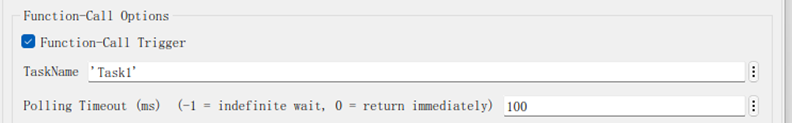
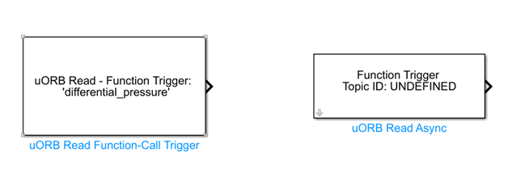

|
RflySimSDK v3.06
RflySimSDK说明文档
|
载入中...
搜索中...
未找到
|
RflySimSDK v3.06
RflySimSDK说明文档
|
| 功能 | 这个模块提供了两个功能，第一个是从某个uORB话题订阅对应的消息。第二个是对异步事件，采用触发函数调用信号的方法订阅话题上的消息数据。 |
|---|---|
| 参数 | |
| uORB Topic（主题名称） | 选择一个已定义的话题：点击按钮“Select uORB Topic msg”可以打开话题列表以供选择，只支持非C++对象的话题。点击按钮“Open .msg file”可以打开选中的 |
| 总线对象 | 该参数用于指定与 uORB 主题相关联的总线对象。总线对象定义了主题消息的结构和数据类型。Simulink的总线对象用来接收uORB的消息，点击按钮“Create Bus Object”，Simulink将从.msg文件夹中找到对应的消息文件，并将其映射到MATLAB工作空间生成总线对象。 |
| uORB Interval（ms） | 设置uORB读间隔：非异步模式下，需要设置查询频率，单位是毫秒，某些话题设置了最高数据更新速率，设置的频率不要超过这个最大值。 |
| Sample time（s） | 采样时间 |
| Simulink Function调用选择区域 | 勾选函数调用触发器 |
| 设置查询超时和任务名：当选择了异步功能，采样时间设置框就消失了，这个时候需要设置查询超时参数和任务名。异步功能会衍生出一个新的线程，负责运行和函数触发信号相关的代码，它会通过查询来等待话题上新的数据的到来。此时需要另一个模块来读取话题上的数据，即“读uORB函数触发器数据模块”，如下图所示。 | |
| 输入 | |
| 输出 | |
| uORB 数据 | 输出与指定 uORB 话题相关的消息数据，通常作为总线对象输出。 |
功能1.从某个uORB话题订阅消息的步骤为：
选择一个已定义的话题
点击按钮“Select uORB Topic msg”可以打开话题列表以供选择，只支持非C++对象的话题。
创建总线（bus）对象
Simulink的总线对象用来接收uORB的消息，点击按钮“Create Bus Object”，Simulink将从.msg文件夹中找到对应的消息文件，并将其映射到MATLAB工作空间生成总线对象。
设置uORB读间隔
非异步模式下，需要设置查询频率，单位是毫秒，某些话题设置了最高数据更新速率，设置的频率不要超过这个最大值。
功能1使用示例如下
[安装目录]\RflySimAPIs\5.RflySimFlyCtrl\0.ApiExps\6.uORB-Read-Write\Exp1_uORB_read.slx
uORB Read Function-Call Trigger模块的关键配置如下：
功能2.异步订阅话题消息的步骤为：
设置查询超时和任务名
当选择了异步功能，采样时间设置框就消失了，这个时候需要设置查询超时参数和任务名。异步功能会衍生出一个新的线程，负责运行和函数触发信号相关的代码，它会通过查询来等待话题上新的数据的到来。此时需要另一个模块来读取话题上的数据，即“读uORB函数触发器数据模块”。
功能2使用示例如下
[安装目录]\RflySimAPIs\5.RflySimFlyCtrl\0.ApiExps\6.uORB-Read-Write\Exp2_uORB_read_func.slx
uORB Read Function-Call Trigger的配置页面，要勾选Function-Call Triggle
其中Polling Timeout可以设置为-1，或指定值。其中，-1表示会一直阻塞（不会消耗计算性能），直到收到消息，才触发Task1；设置为0，则表示不超时立即返回，即不阻塞；设置为对应毫秒，如果超过指定时间没有收到消息，也会强行触发Task1。注：不能设定为0，会导致飞控以无限快速度执行Task1，导致飞控卡死。
配合function和uORB Read Async模块，来触发并处理actuator_armed数据。
uORB Read Async里面的总线数据要和外层触发模块保持一致，这里是actuator_armed
{kind=link}
{kind=link}
{kind=link}
{kind=link}
{kind=link}
{kind=link}
{kind=link}
{kind=link}